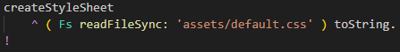
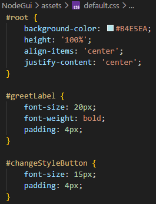
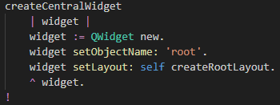
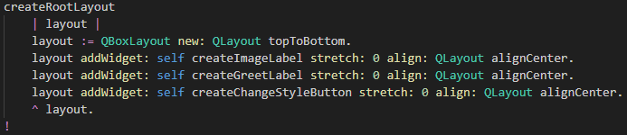

View class - central widget.
Scroll down to the method
createStyleSheet that looks like this:

It simply reads the CSS file and returns it as a string.
The CSS file contents looks like this:

You can see it sets static CSS styling for the
#root window
and for the
#greetLabel and the
#changeStyleButton .
Coding this out in ST would be very verbose..
Scroll down to the method
createCentralWindget that looks like this:

This method simply create a new window
QWidget with the name
root,
and then sets the layout for it (creates GUI elements) with the next method.
Scroll down to the method
createCentralWindget that looks like this:

This method acutall add the GUI elements to a new
QLayout object,
that will be the layout for the containing window (widget).
The remainder of the code creates the GUI elements in a straightforward way
closely following the NodeGui/Qt way of doing things.
Congratulations
This concludes the tutorial section on NodeGui.
To make your own NW.js app, start by making a copy of this example app.
And this is also the end of the tutorial section on SmallJS desktop apps.
If you're unsure about which framework to use,
remember NW.js is the most easy and mature choice currently.